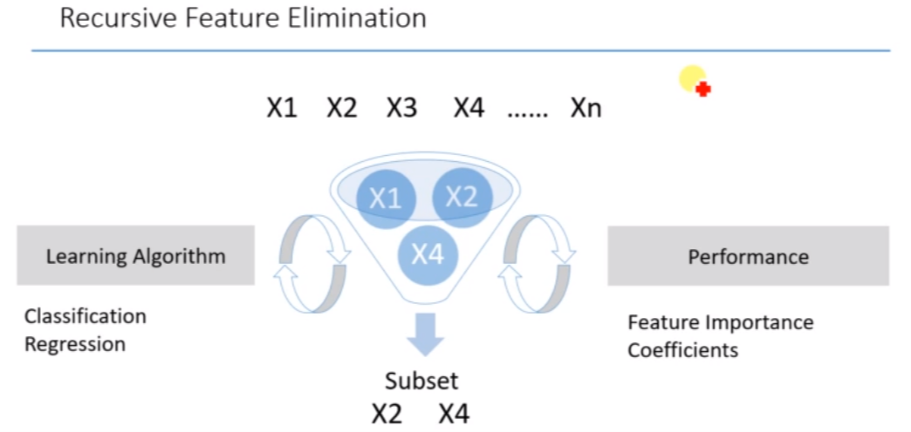
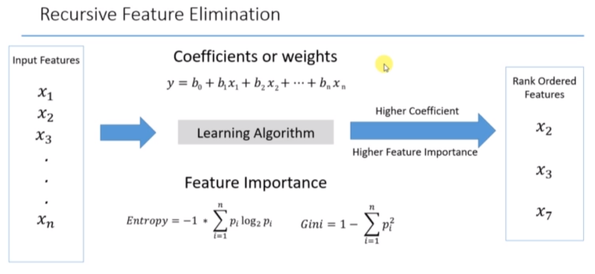

16. Recursive Feature Eliminations¶


To download the data, Please follow the link(https://archive.ics.uci.edu/ml/datasets/Bank+Marketing)
Data Set Information-The data is related with direct marketing campaigns of a Portuguese banking institution. The marketing campaigns were based on phone calls. Often, more than one contact to the same client was required, in order to access if the product (bank term deposit) would be (‘yes’) or not (‘no’) subscribed.
Input variables:
bank client data:
1 - age (numeric)
2 - job : type of job (categorical: ‘admin.’,’blue-collar’,’entrepreneur’,’housemaid’,’management’,’retired’,’self-employed’,’services’,’student’,’technician’,’unemployed’,’unknown’)
3 - marital : marital status (categorical: ‘divorced’,’married’,’single’,’unknown’; note: ‘divorced’ means divorced or widowed)
4 - education (categorical: ‘basic.4y’,’basic.6y’,’basic.9y’,’high.school’,’illiterate’,’professional.course’,’university.degree’,’unknown’)
5 - default: has credit in default? (categorical: ‘no’,’yes’,’unknown’)
6 - housing: has housing loan? (categorical: ‘no’,’yes’,’unknown’)
7 - loan: has personal loan? (categorical: ‘no’,’yes’,’unknown’)
related with the last contact of the current campaign:
8 - contact: contact communication type (categorical: ‘cellular’,’telephone’)
9 - month: last contact month of year (categorical: ‘jan’, ‘feb’, ‘mar’, …, ‘nov’, ‘dec’)
10 - day_of_week: last contact day of the week (categorical: ‘mon’,’tue’,’wed’,’thu’,’fri’)
11 - duration: last contact duration, in seconds (numeric). Important note: this attribute highly affects the output target (e.g., if duration=0 then y=’no’). Yet, the duration is not known before a call is performed. Also, after the end of the call y is obviously known. Thus, this input should only be included for benchmark purposes and should be discarded if the intention is to have a realistic predictive model.
other attributes:
12 - campaign: number of contacts performed during this campaign and for this client (numeric, includes last contact)
13 - pdays: number of days that passed by after the client was last contacted from a previous campaign (numeric; 999 means client was not previously contacted)
14 - previous: number of contacts performed before this campaign and for this client (numeric)
15 - poutcome: outcome of the previous marketing campaign (categorical: ‘failure’,’nonexistent’,’success’)
social and economic context attributes
16 - emp.var.rate: employment variation rate - quarterly indicator (numeric)
17 - cons.price.idx: consumer price index - monthly indicator (numeric)
18 - cons.conf.idx: consumer confidence index - monthly indicator (numeric)
19 - euribor3m: euribor 3 month rate - daily indicator (numeric)
20 - nr.employed: number of employees - quarterly indicator (numeric)
Output variable (desired target): 21 - y - has the client subscribed a term deposit? (binary: ‘yes’,’no’)
Based on these information, our goal is to select the most important features of the dataset and predict the outcome.
#Implement Recursive Features Eliminations.
#Predict product purchase for the Bank Telemarketing
# Import libraries
import pandas as pd
# Read the file
f = pd.read_csv('bank.csv')
f
| age | job | marital | education | default | housing | loan | contact | month | day_of_week | ... | campaign | pdays | previous | poutcome | emp.var.rate | cons.price.idx | cons.conf.idx | euribor3m | nr.employed | y | |
|---|---|---|---|---|---|---|---|---|---|---|---|---|---|---|---|---|---|---|---|---|---|
| 0 | 56 | housemaid | married | basic.4y | no | no | no | telephone | may | mon | ... | 1 | 999 | 0 | nonexistent | 1.1 | 93.994 | -36.4 | 4.857 | 5191.0 | no |
| 1 | 57 | services | married | high.school | unknown | no | no | telephone | may | mon | ... | 1 | 999 | 0 | nonexistent | 1.1 | 93.994 | -36.4 | 4.857 | 5191.0 | no |
| 2 | 37 | services | married | high.school | no | yes | no | telephone | may | mon | ... | 1 | 999 | 0 | nonexistent | 1.1 | 93.994 | -36.4 | 4.857 | 5191.0 | no |
| 3 | 40 | admin. | married | basic.6y | no | no | no | telephone | may | mon | ... | 1 | 999 | 0 | nonexistent | 1.1 | 93.994 | -36.4 | 4.857 | 5191.0 | no |
| 4 | 56 | services | married | high.school | no | no | yes | telephone | may | mon | ... | 1 | 999 | 0 | nonexistent | 1.1 | 93.994 | -36.4 | 4.857 | 5191.0 | no |
| ... | ... | ... | ... | ... | ... | ... | ... | ... | ... | ... | ... | ... | ... | ... | ... | ... | ... | ... | ... | ... | ... |
| 41183 | 73 | retired | married | professional.course | no | yes | no | cellular | nov | fri | ... | 1 | 999 | 0 | nonexistent | -1.1 | 94.767 | -50.8 | 1.028 | 4963.6 | yes |
| 41184 | 46 | blue-collar | married | professional.course | no | no | no | cellular | nov | fri | ... | 1 | 999 | 0 | nonexistent | -1.1 | 94.767 | -50.8 | 1.028 | 4963.6 | no |
| 41185 | 56 | retired | married | university.degree | no | yes | no | cellular | nov | fri | ... | 2 | 999 | 0 | nonexistent | -1.1 | 94.767 | -50.8 | 1.028 | 4963.6 | no |
| 41186 | 44 | technician | married | professional.course | no | no | no | cellular | nov | fri | ... | 1 | 999 | 0 | nonexistent | -1.1 | 94.767 | -50.8 | 1.028 | 4963.6 | yes |
| 41187 | 74 | retired | married | professional.course | no | yes | no | cellular | nov | fri | ... | 3 | 999 | 1 | failure | -1.1 | 94.767 | -50.8 | 1.028 | 4963.6 | no |
41188 rows × 21 columns
Duration- It would be most important column to predict as longer the duration, longer would be the willingness to buy. But our model supports the marketing team before the call. There will be no call duration. It is better to drop it.
#Drop duration column
f=f.drop("duration",axis=1)
f
| age | job | marital | education | default | housing | loan | contact | month | day_of_week | campaign | pdays | previous | poutcome | emp.var.rate | cons.price.idx | cons.conf.idx | euribor3m | nr.employed | y | |
|---|---|---|---|---|---|---|---|---|---|---|---|---|---|---|---|---|---|---|---|---|
| 0 | 56 | housemaid | married | basic.4y | no | no | no | telephone | may | mon | 1 | 999 | 0 | nonexistent | 1.1 | 93.994 | -36.4 | 4.857 | 5191.0 | no |
| 1 | 57 | services | married | high.school | unknown | no | no | telephone | may | mon | 1 | 999 | 0 | nonexistent | 1.1 | 93.994 | -36.4 | 4.857 | 5191.0 | no |
| 2 | 37 | services | married | high.school | no | yes | no | telephone | may | mon | 1 | 999 | 0 | nonexistent | 1.1 | 93.994 | -36.4 | 4.857 | 5191.0 | no |
| 3 | 40 | admin. | married | basic.6y | no | no | no | telephone | may | mon | 1 | 999 | 0 | nonexistent | 1.1 | 93.994 | -36.4 | 4.857 | 5191.0 | no |
| 4 | 56 | services | married | high.school | no | no | yes | telephone | may | mon | 1 | 999 | 0 | nonexistent | 1.1 | 93.994 | -36.4 | 4.857 | 5191.0 | no |
| ... | ... | ... | ... | ... | ... | ... | ... | ... | ... | ... | ... | ... | ... | ... | ... | ... | ... | ... | ... | ... |
| 41183 | 73 | retired | married | professional.course | no | yes | no | cellular | nov | fri | 1 | 999 | 0 | nonexistent | -1.1 | 94.767 | -50.8 | 1.028 | 4963.6 | yes |
| 41184 | 46 | blue-collar | married | professional.course | no | no | no | cellular | nov | fri | 1 | 999 | 0 | nonexistent | -1.1 | 94.767 | -50.8 | 1.028 | 4963.6 | no |
| 41185 | 56 | retired | married | university.degree | no | yes | no | cellular | nov | fri | 2 | 999 | 0 | nonexistent | -1.1 | 94.767 | -50.8 | 1.028 | 4963.6 | no |
| 41186 | 44 | technician | married | professional.course | no | no | no | cellular | nov | fri | 1 | 999 | 0 | nonexistent | -1.1 | 94.767 | -50.8 | 1.028 | 4963.6 | yes |
| 41187 | 74 | retired | married | professional.course | no | yes | no | cellular | nov | fri | 3 | 999 | 1 | failure | -1.1 | 94.767 | -50.8 | 1.028 | 4963.6 | no |
41188 rows × 20 columns
# Split the columns into Dependent (Y) and independent (X) features
x = f.iloc[:,:-1]
y = f.iloc[:, -1]
# Create dummy variables
x = pd.get_dummies(x, drop_first=True)
y = pd.get_dummies(y, drop_first=True)
#Split the X and Y dataset into training and testing set
from sklearn.model_selection import train_test_split
X_train, X_test, Y_train, Y_test = \
train_test_split(x, y, test_size = 0.3, random_state = 1234, stratify=y)
# Import Randon Forest Classifier
from sklearn.ensemble import RandomForestClassifier
# Default Random Forest Object
rfc1 = RandomForestClassifier(random_state=1234)
rfc1.fit(X_train, Y_train)
Y_predict1 = rfc1.predict(X_test)
/opt/hostedtoolcache/Python/3.7.10/x64/lib/python3.7/site-packages/ipykernel_launcher.py:3: DataConversionWarning: A column-vector y was passed when a 1d array was expected. Please change the shape of y to (n_samples,), for example using ravel().
This is separate from the ipykernel package so we can avoid doing imports until
Y_predict1
array([0, 1, 0, ..., 0, 0, 0], dtype=uint8)
#Score and Evaluate the model
# Score and Evaluate the model
from sklearn.metrics import confusion_matrix
cm1 = confusion_matrix(Y_test, Y_predict1)
score1 = rfc1.score(X_test, Y_test)
cm1
array([[10647, 318],
[ 988, 404]])
score1
0.8943109168892126
# Apply Recursive Feature Elimination
from sklearn.feature_selection import RFE
rfc2 = RandomForestClassifier(random_state=1234)
# Create an RFE selector object using RFC as an estimator
rfe = RFE(estimator=rfc2, n_features_to_select=30, step=1)
# Fit the data to the rfe selector
rfe.fit(x, y)
/opt/hostedtoolcache/Python/3.7.10/x64/lib/python3.7/site-packages/sklearn/feature_selection/_rfe.py:241: DataConversionWarning: A column-vector y was passed when a 1d array was expected. Please change the shape of y to (n_samples,), for example using ravel().
estimator.fit(X[:, features], y)
/opt/hostedtoolcache/Python/3.7.10/x64/lib/python3.7/site-packages/sklearn/feature_selection/_rfe.py:241: DataConversionWarning: A column-vector y was passed when a 1d array was expected. Please change the shape of y to (n_samples,), for example using ravel().
estimator.fit(X[:, features], y)
/opt/hostedtoolcache/Python/3.7.10/x64/lib/python3.7/site-packages/sklearn/feature_selection/_rfe.py:241: DataConversionWarning: A column-vector y was passed when a 1d array was expected. Please change the shape of y to (n_samples,), for example using ravel().
estimator.fit(X[:, features], y)
/opt/hostedtoolcache/Python/3.7.10/x64/lib/python3.7/site-packages/sklearn/feature_selection/_rfe.py:241: DataConversionWarning: A column-vector y was passed when a 1d array was expected. Please change the shape of y to (n_samples,), for example using ravel().
estimator.fit(X[:, features], y)
/opt/hostedtoolcache/Python/3.7.10/x64/lib/python3.7/site-packages/sklearn/feature_selection/_rfe.py:241: DataConversionWarning: A column-vector y was passed when a 1d array was expected. Please change the shape of y to (n_samples,), for example using ravel().
estimator.fit(X[:, features], y)
/opt/hostedtoolcache/Python/3.7.10/x64/lib/python3.7/site-packages/sklearn/feature_selection/_rfe.py:241: DataConversionWarning: A column-vector y was passed when a 1d array was expected. Please change the shape of y to (n_samples,), for example using ravel().
estimator.fit(X[:, features], y)
/opt/hostedtoolcache/Python/3.7.10/x64/lib/python3.7/site-packages/sklearn/feature_selection/_rfe.py:241: DataConversionWarning: A column-vector y was passed when a 1d array was expected. Please change the shape of y to (n_samples,), for example using ravel().
estimator.fit(X[:, features], y)
/opt/hostedtoolcache/Python/3.7.10/x64/lib/python3.7/site-packages/sklearn/feature_selection/_rfe.py:241: DataConversionWarning: A column-vector y was passed when a 1d array was expected. Please change the shape of y to (n_samples,), for example using ravel().
estimator.fit(X[:, features], y)
/opt/hostedtoolcache/Python/3.7.10/x64/lib/python3.7/site-packages/sklearn/feature_selection/_rfe.py:241: DataConversionWarning: A column-vector y was passed when a 1d array was expected. Please change the shape of y to (n_samples,), for example using ravel().
estimator.fit(X[:, features], y)
/opt/hostedtoolcache/Python/3.7.10/x64/lib/python3.7/site-packages/sklearn/feature_selection/_rfe.py:241: DataConversionWarning: A column-vector y was passed when a 1d array was expected. Please change the shape of y to (n_samples,), for example using ravel().
estimator.fit(X[:, features], y)
---------------------------------------------------------------------------
KeyboardInterrupt Traceback (most recent call last)
/tmp/ipykernel_2079/3118807827.py in <module>
1 # Fit the data to the rfe selector
----> 2 rfe.fit(x, y)
/opt/hostedtoolcache/Python/3.7.10/x64/lib/python3.7/site-packages/sklearn/feature_selection/_rfe.py in fit(self, X, y)
182 The target values.
183 """
--> 184 return self._fit(X, y)
185
186 def _fit(self, X, y, step_score=None):
/opt/hostedtoolcache/Python/3.7.10/x64/lib/python3.7/site-packages/sklearn/feature_selection/_rfe.py in _fit(self, X, y, step_score)
239 print("Fitting estimator with %d features." % np.sum(support_))
240
--> 241 estimator.fit(X[:, features], y)
242
243 # Get importance and rank them
/opt/hostedtoolcache/Python/3.7.10/x64/lib/python3.7/site-packages/sklearn/ensemble/_forest.py in fit(self, X, y, sample_weight)
391 verbose=self.verbose, class_weight=self.class_weight,
392 n_samples_bootstrap=n_samples_bootstrap)
--> 393 for i, t in enumerate(trees))
394
395 # Collect newly grown trees
/opt/hostedtoolcache/Python/3.7.10/x64/lib/python3.7/site-packages/joblib/parallel.py in __call__(self, iterable)
1042 self._iterating = self._original_iterator is not None
1043
-> 1044 while self.dispatch_one_batch(iterator):
1045 pass
1046
/opt/hostedtoolcache/Python/3.7.10/x64/lib/python3.7/site-packages/joblib/parallel.py in dispatch_one_batch(self, iterator)
857 return False
858 else:
--> 859 self._dispatch(tasks)
860 return True
861
/opt/hostedtoolcache/Python/3.7.10/x64/lib/python3.7/site-packages/joblib/parallel.py in _dispatch(self, batch)
775 with self._lock:
776 job_idx = len(self._jobs)
--> 777 job = self._backend.apply_async(batch, callback=cb)
778 # A job can complete so quickly than its callback is
779 # called before we get here, causing self._jobs to
/opt/hostedtoolcache/Python/3.7.10/x64/lib/python3.7/site-packages/joblib/_parallel_backends.py in apply_async(self, func, callback)
206 def apply_async(self, func, callback=None):
207 """Schedule a func to be run"""
--> 208 result = ImmediateResult(func)
209 if callback:
210 callback(result)
/opt/hostedtoolcache/Python/3.7.10/x64/lib/python3.7/site-packages/joblib/_parallel_backends.py in __init__(self, batch)
570 # Don't delay the application, to avoid keeping the input
571 # arguments in memory
--> 572 self.results = batch()
573
574 def get(self):
/opt/hostedtoolcache/Python/3.7.10/x64/lib/python3.7/site-packages/joblib/parallel.py in __call__(self)
261 with parallel_backend(self._backend, n_jobs=self._n_jobs):
262 return [func(*args, **kwargs)
--> 263 for func, args, kwargs in self.items]
264
265 def __reduce__(self):
/opt/hostedtoolcache/Python/3.7.10/x64/lib/python3.7/site-packages/joblib/parallel.py in <listcomp>(.0)
261 with parallel_backend(self._backend, n_jobs=self._n_jobs):
262 return [func(*args, **kwargs)
--> 263 for func, args, kwargs in self.items]
264
265 def __reduce__(self):
/opt/hostedtoolcache/Python/3.7.10/x64/lib/python3.7/site-packages/sklearn/utils/fixes.py in __call__(self, *args, **kwargs)
220 def __call__(self, *args, **kwargs):
221 with config_context(**self.config):
--> 222 return self.function(*args, **kwargs)
/opt/hostedtoolcache/Python/3.7.10/x64/lib/python3.7/site-packages/sklearn/ensemble/_forest.py in _parallel_build_trees(tree, forest, X, y, sample_weight, tree_idx, n_trees, verbose, class_weight, n_samples_bootstrap)
167 indices=indices)
168
--> 169 tree.fit(X, y, sample_weight=curr_sample_weight, check_input=False)
170 else:
171 tree.fit(X, y, sample_weight=sample_weight, check_input=False)
/opt/hostedtoolcache/Python/3.7.10/x64/lib/python3.7/site-packages/sklearn/tree/_classes.py in fit(self, X, y, sample_weight, check_input, X_idx_sorted)
905 sample_weight=sample_weight,
906 check_input=check_input,
--> 907 X_idx_sorted=X_idx_sorted)
908 return self
909
/opt/hostedtoolcache/Python/3.7.10/x64/lib/python3.7/site-packages/sklearn/tree/_classes.py in fit(self, X, y, sample_weight, check_input, X_idx_sorted)
392 min_impurity_split)
393
--> 394 builder.build(self.tree_, X, y, sample_weight)
395
396 if self.n_outputs_ == 1 and is_classifier(self):
KeyboardInterrupt:
# Create new Train and Test datasets
X_train_rfe = rfe.transform(X_train)
X_test_rfe = rfe.transform(X_test)
# Fit the Random Forest classifier to the new train and test with 80 features
rfc2.fit(X_train_rfe, Y_train)
<ipython-input-300-f3e058855531>:2: DataConversionWarning: A column-vector y was passed when a 1d array was expected. Please change the shape of y to (n_samples,), for example using ravel().
rfc2.fit(X_train_rfe, Y_train)
RandomForestClassifier(random_state=1234)
# Test the model with new Test dataset
Y_predict = rfc2.predict(X_test_rfe)
# Score and Evaluate the new model
from sklearn.metrics import confusion_matrix
cm_rfe = confusion_matrix(Y_test, Y_predict)
cm_rfe
array([[10638, 327],
[ 979, 413]], dtype=int64)
score_rfe = rfc2.score(X_test_rfe, Y_test)
score_rfe
0.8943109168892126
# Get column names
columns = list(x.columns)
columns
['age',
'campaign',
'pdays',
'previous',
'emp.var.rate',
'cons.price.idx',
'cons.conf.idx',
'euribor3m',
'nr.employed',
'job_blue-collar',
'job_entrepreneur',
'job_housemaid',
'job_management',
'job_retired',
'job_self-employed',
'job_services',
'job_student',
'job_technician',
'job_unemployed',
'job_unknown',
'marital_married',
'marital_single',
'marital_unknown',
'education_basic.6y',
'education_basic.9y',
'education_high.school',
'education_illiterate',
'education_professional.course',
'education_university.degree',
'education_unknown',
'default_unknown',
'default_yes',
'housing_unknown',
'housing_yes',
'loan_unknown',
'loan_yes',
'contact_telephone',
'month_aug',
'month_dec',
'month_jul',
'month_jun',
'month_mar',
'month_may',
'month_nov',
'month_oct',
'month_sep',
'day_of_week_mon',
'day_of_week_thu',
'day_of_week_tue',
'day_of_week_wed',
'poutcome_nonexistent',
'poutcome_success']
# Get the ranking of the features. Ranking 1 for selected features
ranking = rfe.ranking_
ranking
array([ 1, 1, 1, 1, 1, 1, 1, 1, 1, 1, 5, 11, 1, 1, 3, 1, 6,
1, 8, 16, 1, 1, 20, 4, 1, 1, 22, 1, 1, 2, 1, 23, 7, 1,
13, 1, 1, 17, 21, 15, 14, 10, 12, 19, 9, 18, 1, 1, 1, 1, 1,
1])
# Get the feature importance scores
feature_importance = rfc1.feature_importances_
feature_importance
array([1.70809903e-01, 8.39670422e-02, 3.09585398e-02, 1.91089531e-02,
2.20649131e-02, 2.31893481e-02, 2.78846783e-02, 1.21091042e-01,
6.26615200e-02, 1.40153409e-02, 6.52409605e-03, 5.32901247e-03,
1.14962225e-02, 7.62594112e-03, 7.65622686e-03, 1.14585079e-02,
6.14242701e-03, 1.75824848e-02, 5.61703920e-03, 2.60052665e-03,
2.11730222e-02, 1.76798976e-02, 9.09749915e-04, 7.64070771e-03,
1.21102433e-02, 1.73136763e-02, 5.71709699e-04, 1.26410579e-02,
1.78213433e-02, 7.69009624e-03, 1.66857423e-02, 1.39446286e-07,
3.31006585e-03, 3.89403727e-02, 3.21863249e-03, 2.38703939e-02,
1.64336689e-02, 2.42264097e-03, 9.09274796e-04, 2.25768711e-03,
2.98676679e-03, 3.84770285e-03, 4.23807825e-03, 2.12292725e-03,
5.45740279e-03, 1.87285593e-03, 1.62182135e-02, 1.61434986e-02,
1.55667196e-02, 1.59937293e-02, 9.71855647e-03, 2.44496615e-02])
my_formatter = "{0:.6f}"
feature_importance_output=list(map('{:.6f}%'.format,feature_importance))
Higher the importance, higher the chance to get selected
# Create the dataframe of the Features selected, Ranking and their importance
rfe_selected = pd.DataFrame()
rfe_selected = pd.concat([pd.DataFrame(columns),
pd.DataFrame(ranking),
pd.DataFrame(feature_importance_output)], axis=1)
rfe_selected.columns = ["Feature Name", "Ranking", "Feature Importance"]
rfe_selected
| Feature Name | Ranking | Feature Importance | |
|---|---|---|---|
| 0 | age | 1 | 0.170810% |
| 1 | campaign | 1 | 0.083967% |
| 2 | pdays | 1 | 0.030959% |
| 3 | previous | 1 | 0.019109% |
| 4 | emp.var.rate | 1 | 0.022065% |
| 5 | cons.price.idx | 1 | 0.023189% |
| 6 | cons.conf.idx | 1 | 0.027885% |
| 7 | euribor3m | 1 | 0.121091% |
| 8 | nr.employed | 1 | 0.062662% |
| 9 | job_blue-collar | 1 | 0.014015% |
| 10 | job_entrepreneur | 5 | 0.006524% |
| 11 | job_housemaid | 11 | 0.005329% |
| 12 | job_management | 1 | 0.011496% |
| 13 | job_retired | 1 | 0.007626% |
| 14 | job_self-employed | 3 | 0.007656% |
| 15 | job_services | 1 | 0.011459% |
| 16 | job_student | 6 | 0.006142% |
| 17 | job_technician | 1 | 0.017582% |
| 18 | job_unemployed | 8 | 0.005617% |
| 19 | job_unknown | 16 | 0.002601% |
| 20 | marital_married | 1 | 0.021173% |
| 21 | marital_single | 1 | 0.017680% |
| 22 | marital_unknown | 20 | 0.000910% |
| 23 | education_basic.6y | 4 | 0.007641% |
| 24 | education_basic.9y | 1 | 0.012110% |
| 25 | education_high.school | 1 | 0.017314% |
| 26 | education_illiterate | 22 | 0.000572% |
| 27 | education_professional.course | 1 | 0.012641% |
| 28 | education_university.degree | 1 | 0.017821% |
| 29 | education_unknown | 2 | 0.007690% |
| 30 | default_unknown | 1 | 0.016686% |
| 31 | default_yes | 23 | 0.000000% |
| 32 | housing_unknown | 7 | 0.003310% |
| 33 | housing_yes | 1 | 0.038940% |
| 34 | loan_unknown | 13 | 0.003219% |
| 35 | loan_yes | 1 | 0.023870% |
| 36 | contact_telephone | 1 | 0.016434% |
| 37 | month_aug | 17 | 0.002423% |
| 38 | month_dec | 21 | 0.000909% |
| 39 | month_jul | 15 | 0.002258% |
| 40 | month_jun | 14 | 0.002987% |
| 41 | month_mar | 10 | 0.003848% |
| 42 | month_may | 12 | 0.004238% |
| 43 | month_nov | 19 | 0.002123% |
| 44 | month_oct | 9 | 0.005457% |
| 45 | month_sep | 18 | 0.001873% |
| 46 | day_of_week_mon | 1 | 0.016218% |
| 47 | day_of_week_thu | 1 | 0.016143% |
| 48 | day_of_week_tue | 1 | 0.015567% |
| 49 | day_of_week_wed | 1 | 0.015994% |
| 50 | poutcome_nonexistent | 1 | 0.009719% |
| 51 | poutcome_success | 1 | 0.024450% |